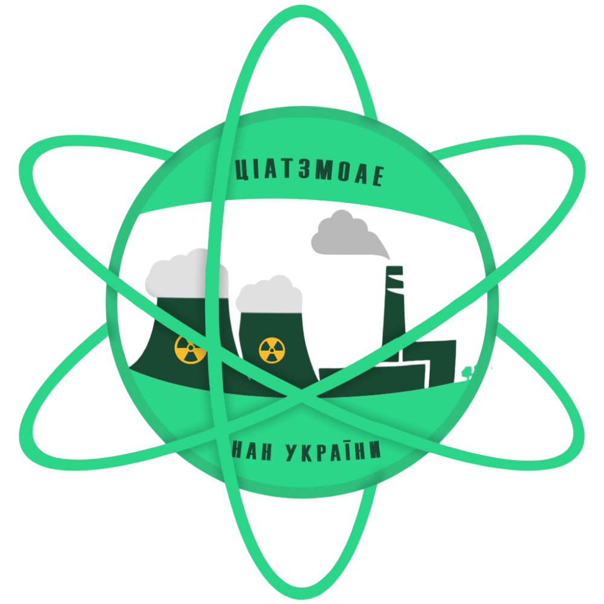
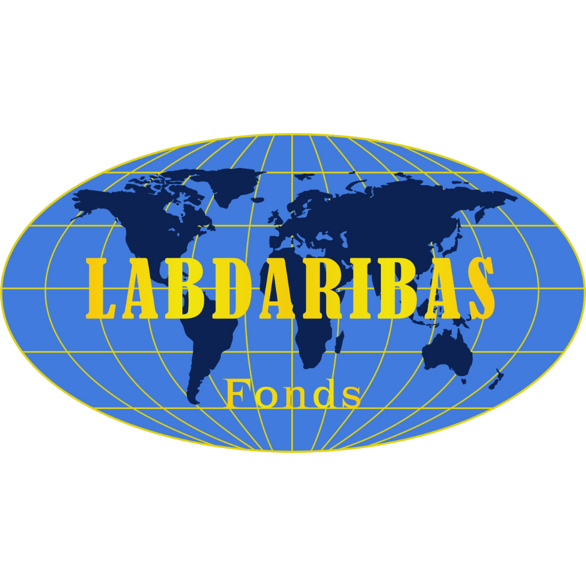
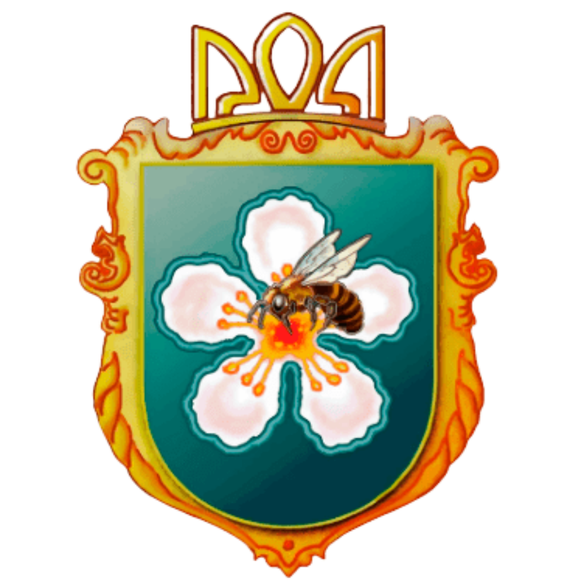
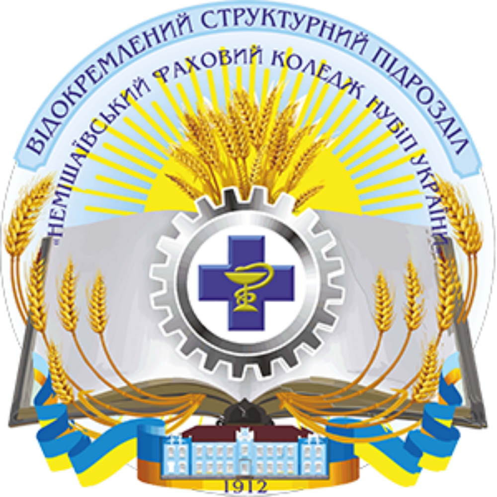
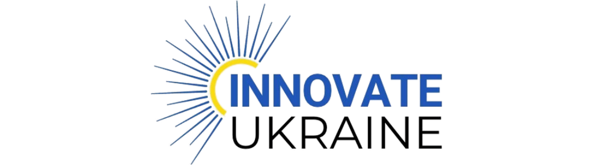

Aston University
Велика Британія — науковий лідер проєкту, експертиза в галузі гібридних відновлюваних систем і теплового накопичення
Наші проєкти реалізуються завдяки міцному українсько-британському консорціуму.
Велика Британія — науковий лідер проєкту, експертиза в галузі гібридних відновлюваних систем і теплового накопичення

Велика Британія — інтеграція та комерціалізація технології

Україна — монтаж, введення в експлуатацію та технічне обслуговування на місцях

Велика Британія — лідер проєкту, розробник технології піролізу-газифікації
Велика Британія — технічний координатор

Україна — впровадження на місцях, переробка будівельного сміття

Україна — інжиніринг та збирання прототипів

Наукова експертиза та матеріалознавство
Україна — розробка наноматеріалів

Labdaribas fonds HELP UKRAINE, Латвія — гуманітарна координація та комунікація на рівні ЄС

Пілотна локація впровадження «Simple Heat»

Навчально-виробнича лабораторія «Тваринництво» як демонстраційна локація для біогазового проєкту BioSolar Nexus

Міжнародна донорська програма

Партнер міжнародного розвитку